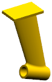
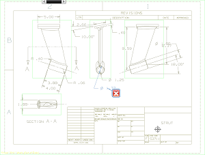
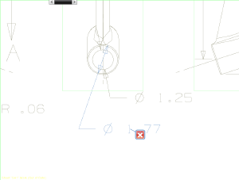
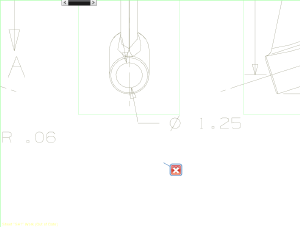

在流列表或者树列表中，右击任一结果并选择设为显示部件。

右击 Radial Dimension 结果并选择切换到制图应用模块 。
在制图应用模块中，错误现在为可见，所以它包含一个错误标签，您可能需要点击图纸页来更新标签显示。

|
注释 |
如果您使用的是全屏模式，当您切换到制图应用模块时，HD3D 工具窗口可能已经关闭，要在全屏模式下显示 HD3D 工具窗口，点击聚合工具条上的资源条→HD3D 工具。 |
如果错误标签未显示在图纸页中，点击检查手工输入文本的尺寸标注节点和检查最新制图节点(如果需要)。
尺寸的错误标签现在应该显示在图纸页中了。
在图形窗口中右击错误标签并选择关注标记视图。

选择手工输入文本的尺寸并点击删除。
尺寸已被删除，但是检查手工输入文本的尺寸标注节点仍然显示在 Check-Mate HD3D 工具的结果列表中，错误标签可能会随尺寸一起删除，也可能保留在图纸页中。

在控制组中，点击 执行 Check-Mate 测试 。
错误标签将从图纸页中移除，并且结果列表中的 ckm1_strut.prt 已被收起。
展开 ckm1_strut.prt 节点。
现在只剩下检查最新制图节点，检查手工输入文本的尺寸标注节点已在前面的步骤中被移除。